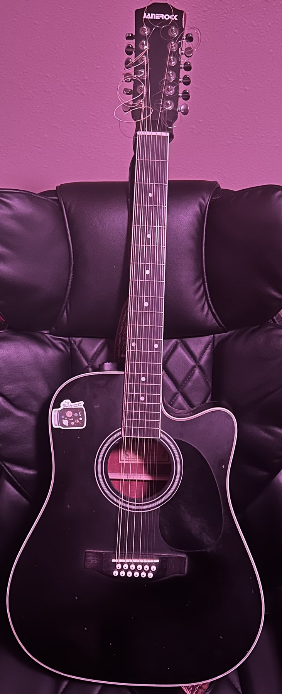
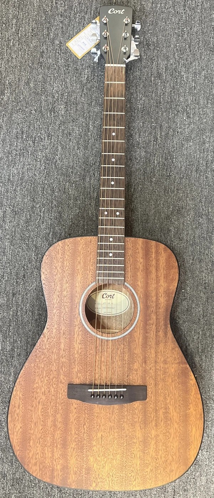
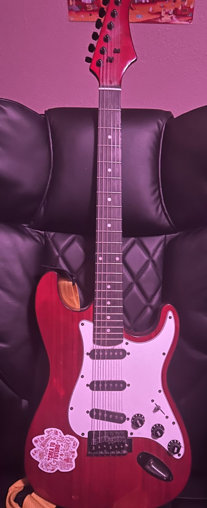
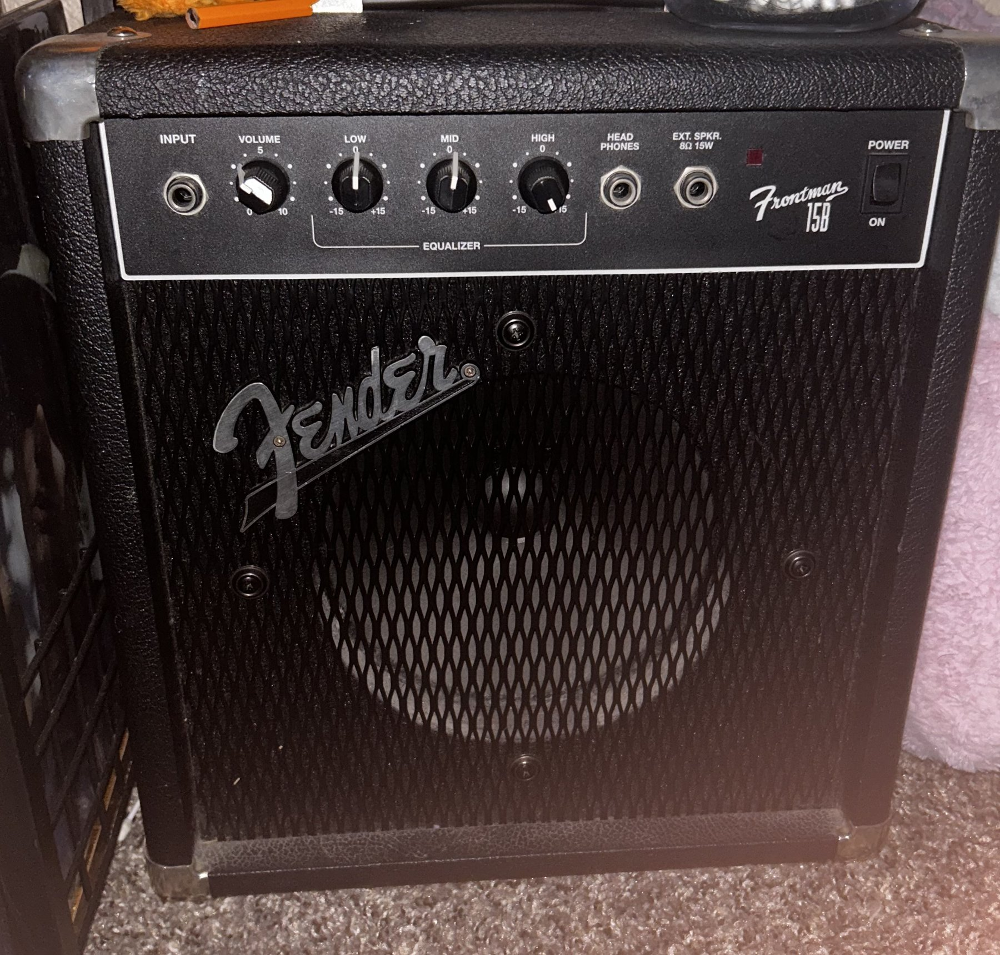

The 12-string
I love its sparkly, shimmering sound. It is beautiful to listen to and a joy to play.
Not for beginners: it is hard to get used to, so I would not start on one. Mine is a plain acoustic, so it can't be plugged into an amp.
Guitars, amps, and six open chords: what they look like, what they sound like, and what I wish someone had told me before I started.
I started playing in my sophomore year of high school, when a friend gave me a guitar. I learned from tabs, mostly Mexican music, without really knowing what the chords looked like or how they were supposed to sound.
Then I met a friend who was far better than me. He helped me improve faster than I would have on my own, and he showed me there was a lot more to play than one style. I moved toward indie and started writing my own songs.
I still think learning would have been easier if I had known what each chord looked and sounded like from day one. So I made the guide I wish I'd had.

I love its sparkly, shimmering sound. It is beautiful to listen to and a joy to play.
Not for beginners: it is hard to get used to, so I would not start on one. Mine is a plain acoustic, so it can't be plugged into an amp.

The standard six-string acoustic is the guitar most people start on, and for good reason. It has half as many strings as a 12-string, so it is easier on your fingers while you build skill.
It is loud enough to play on its own, so there is no amp to buy or set up.

I got it because I wanted to get into rock. I stayed for the versatility: so many different sounds and styles from one guitar.
It needs an amp to be heard properly, which brings us to the next section.
An amp takes the quiet signal from a guitar, makes it louder, and shapes the tone. Without one, an electric guitar is barely audible.

My amp is a Fender Frontman 15B, which is a bass amp. It works the same way as a guitar amp: plug in, turn the volume up, and play. The difference is the sound. Bass amps are built for low notes, so a guitar can sound a little different through one.
Learn from my mistake: I didn't know my 12-string can't be plugged in until after I got it. If you want to use an amp, check before you buy that the guitar is an acoustic-electric. Look for a cable jack on the body and often a small control panel on the side.
Each diagram shows the strings from low to high, left to right. A dot is where a finger goes, an open circle is a string played open, and an x is a string you skip.
How it sounds: Bright and open, like a sunny morning.
Tip: Keep your fingers arched so the open strings can ring.
How it sounds: Soft and a little wistful.
Tip: It is a C with two fingers shifted over, so the two chords are easy to switch between.
How it sounds: Warm, full, and cheerful.
Tip: Three fingers sit side by side on the second fret. Squeeze them in tight.
How it sounds: Rich and full, with a little weight to it.
Tip: This is the barre chord that trips up most beginners. Try the easier version below first.
Mute the two lowest strings. Barre the top two strings at the first fret with your index finger, put your middle finger on the second fret of the G string, and your ring finger on the third fret of the D string.
How it sounds: Big, ringing, and open.
Tip: Let the open middle strings ring out.
How it sounds: Dark and mellow, with a quiet ache.
Tip: The easiest chord here, and a good one to learn first.